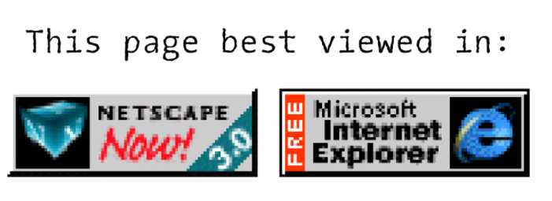

Class 13: jQuery
Evan Wallace
Senior Software Developer - Berkley Insurance Australia
Learning Objectives
- Differentiate between jQuery and JavaScript, describe benefits of using them
- Recognize jQuery syntax
- Use selectors and jQuery functions to effectively manipulate the DOM
Agenda
- Introduction to jQuery
- History of Javascript and where jQuery fits in
- Including jQuery in your projects
- jQuery Basics
- jQuery Plugins
jQuery is javascript
jQuery is a fast, small, and feature-rich JavaScript library. jQuery has changed the way that millions of people write JavaScript.
Javascript library
- Pre-written code
- Reuseable across multiple projects
- Allows developers to focus on the core features of their app
Features of the jQuery Library
- Simplified Element Selection syntax
- CSS Manipulation
- Simplified Animation syntax
- Cross browser support
- More!
Javascript created at netscape (in 10 days) and implemented in netscape navigator

- Microsoft reverse engineers javascript and creates JScript. Deployed in Internet Explorer 3
- Netscape submits a specification to ECMA International to formalize the language
- First "browser war" begins

Browser war

- ES3 is released. This is the baseline for modern day javascript
- IE5 is released. Supports ES3 but still uses JScript instead of Javascript

- Netscape is basically dead and IE has 90% + of market share
- Safari is released and uses javascript
- Firefox (Successor to Netscape Navigator) is released using javascript supporting the ES3 spec
- Basically the wild west of browsers, rules in the ES3 spec are blatantly broken
- Writing simple things required lots of code and a deep understanding of how each browser works
- jQuery is released because of frustrations trying to develop for each browser
- Microsoft announces support for jQuery and distribute with Visual Studio. jQuery is even more widely
adopted.
- Some very important libraries start to use jQuery as their base so it became more important to learn
it
- Microsoft, yahoo and google dissent from ES4 resulting it being shelved. This prevented javascript from
evolving to meet needs of modern websites and developers

- ES5 is finalized with less adventurous changes but lots of quality of life changes.
- Chrome is released. Fully supports ES5
- Second Browser war begins! (still sort of ongoing)

- IE10 released. Powered by JScript. Fully supports ES5
- Chrome is released. Fully supports ES5
- Firefox fully supports ES5
- Things start to get a bit more consistent
- IE11 released. Still powered by JScript
- ECMAScript 6 is finalized and browser support is still incomplete without jumping through a few hoops

- Microsoft announces only security updates will be created for IE11. No new feature releases.
- Microsoft Edge is released and is powered by Javascript fully supporting ES5 and partially supporting
ES6
- All major browsers finally using same language!
- ECMAScript 7 is finalized and has partial support
Where does that leave jQuery today?
- A lot of the internet is still powered by jQuery
- Gives lots of tools to new Web Developers
- Best case for learning how libraries work
- Developers may choose to move away from jQuery as their own skills start to overshadow what jQuery can
perform
Including jQuery in your project
Where do you get jQuery from?
What is a CDN?
- Stands for Content Delivery Network
- A group of similar servers around the world that help distribute content used by websites
- Requesting jQuery from a CDN will locate the server closest to you to download from there
- Results in shorter download times (the jQuery file has to navigate less of the internet)
- If a user has already downloaded jQuery from the CDN. It will cache it locally and use that again instead
of downloading.
Linking External Javascript
Linking Multiple External Javascript
Order is important.
CODE ALONG: jQuery Example
jQuery Syntax
jQuery is purpose build to interact with HTML elements and perform actions on them
$(selector).action();
-
$ - Access jQuery
-
(selector) - a css query to find HTML element(s)
-
action() - An action to be performed on the element(s)
HTML Element selection
// javascript
document.getElementById("button");
document.getElementByClassName("button");
document.getElementByTagName("h1");
// jQuery
$("#button");
$(".button");
$("h1");
CODE ALONG: jQuery Elements
jQuery Function
.click();
.hide();
.show();
.slideUp();
.slideDown();
.slideToggle();
.addClass();
jQuery Functions
// hides all p elements
$("p").hide();
// Hides all elements with class="button"
$(".button").hide();
// Hide element with id="test"
$("#test").hide();
CODE ALONG: jQuery Functions
What are plugins?
Basically the same as libraries, just smaller
Someone elses code used to accomplish some purpose
Extends what jQuery already has available
How are they installed?
- Download all files into your project
- Make sure all Javascript files are included after jQuery but before your code!
- Read documentation
Because plugins are written by a wide variety of people. Its important to read any documentation in advance.
If its not documented well, try to find an alternative
lab time: build a faq page